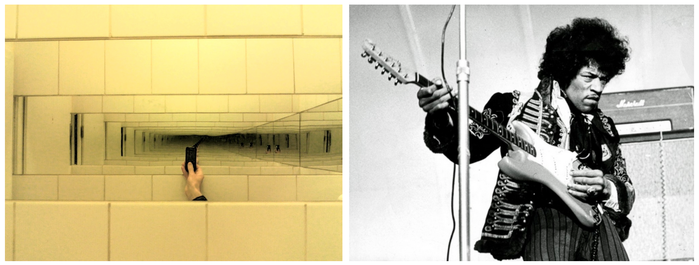

Communication 1
Swapping lectures:
- 14/12/18: Organising information: graphs
- 17/12/18: Project presentation (11:30-13:30)
Communication 2
Clarification on test-driven development: all the tests must be passed in order to claim that an algorithm returns what it is expected
If a test execution return False, the test is not passed
If you need to check the non-compliancy of the execution of a function on purpose, then you have to create an additional testing function that returns True if the condition of the test is not passed
Remeber: first write the test, then develop the algorithm/function
Any question about the previous lecture?
Historic hero: Douglas Hofstadter
He is a cognitive scientist
Research on self-reference: situations where something refers to itself
Author of Gödel, Escher, Bach: An Eternal Golden Braid where he investigated in depth the concept of self-reference
In 1980, he was awarded of the Pulitzer's for that book
One of the main book themes: concept of intelligence (including artificial intelligence)
Little Harmonic Labyrinth
Achilles and the Tortoise's adventures in entering in the inconsistent composite world depicted by Escher's Convex and Concave
Entering into and exiting from a world via the pushing-potion and popping-tonic respectively
Achilles and the Tortoise narrate (or are part of) a lot of stories, which include citations and references as well as self-citations and self-references
The genies and the lamps
Achilles uses of a magic lamp and evokes a genie
First wish: to have one hundred of wishes instead of the usual three
Genie: not possible for him, it's a meta-wish (i.e. a wish of a wish). It uses its meta-lamp to ekove the meta-genie asking for the same meta-wish
Meta-genie: not possible for him, it's a meta-meta-wish (i.e. a wish of a wish of a wish). It uses its meta-meta-lamp to ekove the meta-meta-genie
...
Positive answer: Achilles is granted with the permission
Achilles wishes that his wish would not be granted
Self-references for paradoxes
Achilles' wish concerns the denial of the wish it self, which results in a paradox by means of a self-reference
Other notable examples of self-references:

Natural language:
this sentence is false
Graphical language:
Escher's Drawing hands
Recursion
We have a recursion when something is defined in terms of itself or of its type – i.e. when its definition contains a self-reference
Do we use it in our daily life?
Linguistics: recursive rules in formal grammars
<boolean_expression> ::= "(" "not" <boolean_expression> ")"
<boolean_expression> ::= "(" <boolean_expression> "or" <boolean_expression> ")"
<boolean_expression> ::= "(" <boolean_expression> "and" <boolean_expression> ")"
<boolean_expression> ::= "True"
<boolean_expression> ::= "False"Chomsky argued that recusion is essential in human language: Alice thinks Bob said Christine read books
Mirrors and sounds

Recursion in Computer Science
It is an alternative to the iteration (i.e. foreach and while loops)
It is often used when a solution to a particular computational problem depends on the partial solutions of smaller instances of the same problem
Computer Scientists tame recursion to avoid infinite loops:
one or more base cases, which describe the terminating scenarios
one or more recursion steps, where the algorithm is run gain with a reduced input
What could possibly go wrong?
def run_forever_recursive():
run_forever_recursive()The run_forever algorithm implemented by means of a recursion step – with no base cases
Recursive algorithm: an example
Computational problem: multiply two non-negative integers
E.g.: 3 * 4 = 3 + 3 + 3 + 3
n1 * n2 = n1 + (n1 * (n2 - 1))
3 * 4 = 3 + (3 * (4 - 1)) = 3 + (3 + (3 * (4 - 2))) = 3 + (3 + (3 + (3 * (4 - 3)))) = 3 + (3 + (3 + (3 + (3 * (4 - 4))))) = 3 + 3 + 3 + 3 + 0 = 12
Multiplication: the algorithm
def multiplication(int_1, int_2):
if int_2 == 0:
return 0
else:
return int_1 + multiplication(int_1, int_2 - 1)